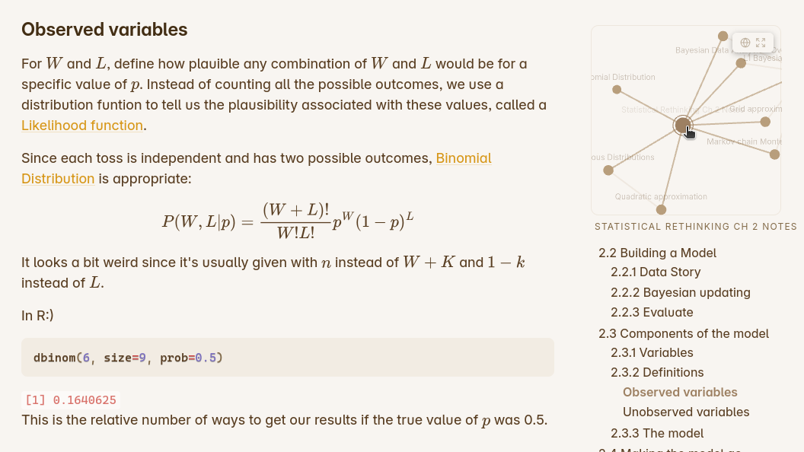
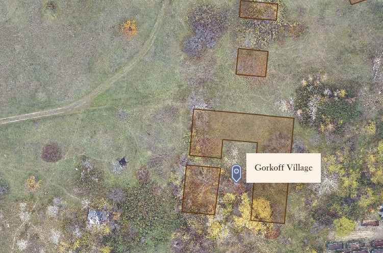
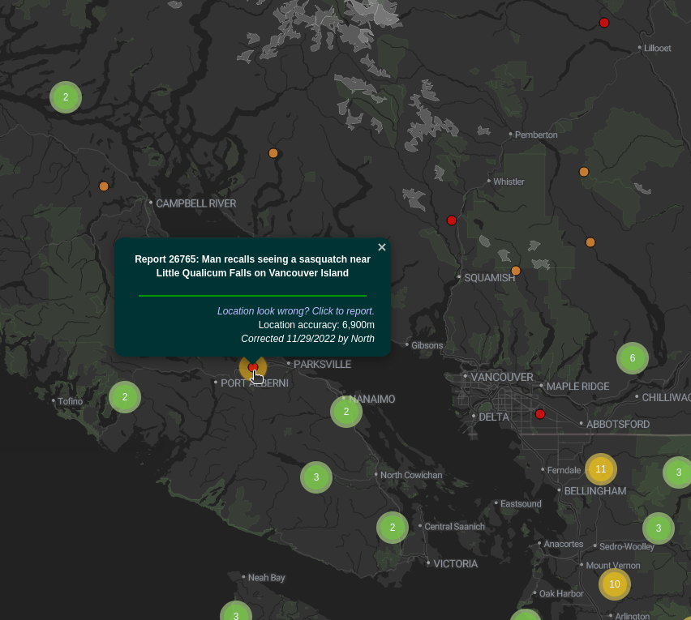

I was checking out the World Checklist for Vascular Plants data to try and learn about the evolutionary history and biodiversity patterns of some of my favourite plant families, and I got kind of obsessed with it. I decided to turn my little Python scripts into a proper web app, built with Observable Framework. I hadn't done very much javascript or web development before this project, so it was a real learning experience and I'm proud of how it turned out. I've shown it to a few other plant nerds who have found it pretty interesting.
Portfolio
Here's a collection of some projects I've worked on that I can share publicly on the web. I also made a lot of maps and other products that I'm proud of when I worked for the Province, but nearly all of it contained some confidential data that I'm not able to share.
Floral World
2026
Pinkka Anki Importer
2026
I've really enjoyed using the open source flashcard software Anki to help with memorization, especially language learning. For a couple courses I took at University of Helsinki, I needed to memorize a lot of plants based on their photos on this online database called Pinkka. I wrote a Python script to download the images and data and turn them into an Anki flashcard, and later published this as an Anki addon to make it easier for other students to use. I've got a lot of satisfaction out of knowing that I've helped other biology students make memorizing giant lists of species a bit easier.

Dismal Sariola (Digital Garden)
2025
In my first year at University of Helsinki, a lot of my peers were asking me for help in our classes and if I could share my notes, especially for the statistics and math courses. I had been keeping them with Obsidian, and I found this plugin that lets you publish your Obsidian vault as a "digital garden" of your personal notes. The other students found it really helpful, and I also enjoyed maintaining it. I still add new notes there of things I find interesting, so it's almost like a personal blog.

Historical Reconstruction of Kp'it'els / Brilliant Flats
2022
My undergrad thesis project from the GIS program at Selkirk College. I flew a Lidar-equipped drone over a historic village site, first from the Sinixt First Nation and later a Russian Doukhobor communal farm. I reviewed archaeological surveys and hand-drawn maps of the site from the museum archives. I was able to locate the building foundations and produced this story map to share with the community.

SquatchMap
2021
For another class at Selkirk, I made this LeafletJS webmap that collects all the very serious Bigfoot sightings from the "Bigfoot Field Research Organization". It is continuously updated from a KML hosted on their site, along with a bit of data cleaning and processing to display the uncertainty circle polygons. I even made a really hacky google form that people can use to update the bad locations in their dataset. I learned a lot about Javascript and Leaflet making this, and it was a lot of fun.
I got in touch with "Matt Moneymaker" from the BFRO about sharing this on his site, but he lost interest after he realized I couldn't get the school to sign some kind of research agreement with him. It's a lot of fun to look through the map and read the sighting reports.
